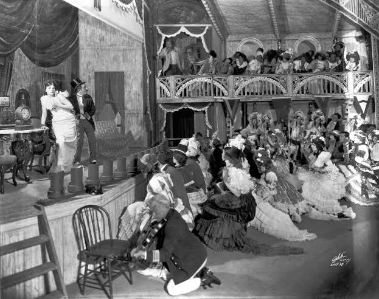

Histórico de Musicais
Um gênero de produção de arte
Os curtas-metragens musicais foram feitos por Lee de
Forest em 1923-24. A partir de 1926, milhares de curtas Vitaphone foram feitos, muitos com bandas,
vocalistas e dançarinos. Os primeiros longas-metragens com som sincronizado tinham apenas uma trilha sonora de
música e efeitos sonoros ocasionais que tocavam enquanto os atores retratavam seus personagens exatamente como
faziam em filmes mudos: sem diálogo audível. The Jazz Singer, lançado em 1927 pela Warner Brothers, foi o primeiro
a incluir uma faixa de áudio que incluía música não diegética e música diegética, mas teve apenas uma pequena
sequência de diálogos falados. Este longa-metragem também foi um musical, com Al Jolson cantando "Dirty Hands,
Dirty Face", "Toot, Toot, Tootsie", "Blue Skies" e "My Mammy". O historiador Scott Eyman escreveu:
"À medida que o filme terminava e os aplausos cresciam com as luzes da casa, a esposa de
Sam Goldwyn, Frances, olhou em volta para as celebridades da multidão. Ela viu 'terrorismo em todos os seus
rostos', disse ela, como se eles soubessem que 'o jogo que eles estavam jogando há anos finalmente tinha
acabado'."
Ainda assim, apenas sequências isoladas apresentavam som "ao vivo"; a maior parte do filme tinha apenas
uma partitura musical síncrona. Em 1928, a Warner Brothers seguiu isso com outro talkie parcial de Jolson, The
Singing Fool, que foi um grande sucesso. Os teatros se esforçaram para instalar o novo equipamento de som e
contratar compositores da Broadway para escrever musicais para a tela. O primeiro recurso de conversa, Lights of New
York, incluiu uma sequência musical em uma boate. O entusiasmo do público era tão grande que em menos de um ano
todos os principais estúdios estavam fazendo imagens sonoras exclusivamente. The Broadway Melody (1929) tinha um
enredo de show-biz sobre duas irmãs competindo por um charmoso homem de música e dança. Anunciado pela MGM como o
primeiro longa-metragem "All-Talking, All-Singing, All-Dancing", foi um sucesso e ganhou o Oscar de Melhor Filme em
1929.
Abaixo é mostrada uma foto de como era um teatro musical na década de 20.
